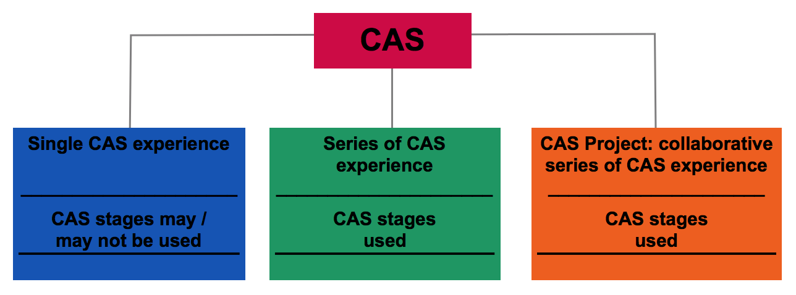
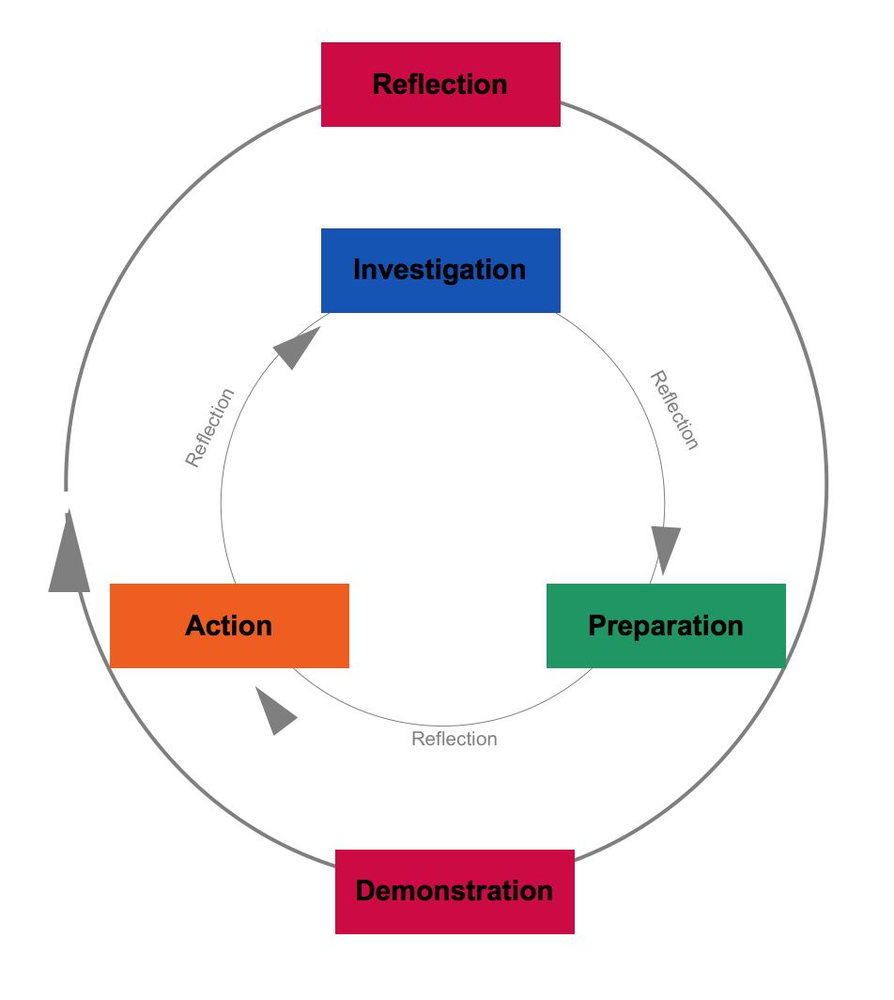

---
layout: default
title: CAS - ISA home
--- 
<div class="blurb" style="font-family:'Times New Roman';
    font-size: 2.1em;
    line-height: 1.4em;
    color: #333;">

  <h1>Upper School CAS home page</h1>
  
  <br/>  <strong>CAS Programme Aims</strong><br/>
  <p>
  <ul>
	  <li><b>enjoy</b> and find significance in a range of CAS experiences</li>
	  <li>purposefully <b>reflect</b> upon their experiences</li>
	  <li>identify <b>goals</b>, develop <b>strategies</b> and determine further actions for <b>personal growth</b></li>
	  <li>explore new possibilities, embrace new <b>challenges</b> and adapt to new roles</li>
	  <li>actively participate in planned, sustained, and <b>collaborative CAS projects</b></li>
	  <li>understand they are members of local and <b>global communities</b> with responsibilities towards each other and the environment.</li>
  </ul>
  All CAS students are expected to maintain and complete a <b>CAS portfolio (Managebac at ISA)</b> as evidence of their engagement with CAS.
</p>
<div style="text-align:center">
	 </div>
<br/>
  <strong>CAS Strands</strong>
  <p>
  <ul>
	  <li><b>Creativity</b>—exploring and extending ideas leading to an original or interpretive product 
		  or performance</li>

	  <li><b>Activity</b>—physical exertion contributing to a healthy lifestyle</li>

<li><b>Service</b>—collaborative and reciprocal engagement with the community in response to an authentic need</li>  
  </ul>
  </p>
  <div style="text-align:center">
	  </div>
  <br/>  <strong>CAS Learning Outcomes</strong>
  <p>
  <ol>
  <li>Identify own strengths and develop areas for growth</li>
  <li>Demonstrate that challenges have been undertaken, developing new skills in the process.</li>
  <li>Demonstrate how to initiate and plan a CAS experience</li>
  <li>Show commitment to and perseverance in CAS experiences</li>
  <li>Demonstrate the skills and recognize the benefits of working collaboratively</li>
  <li>Demonstrate engagement with issues of global significance</li>
  <li>Recognize and consider the ethics of choices and actions</li>
  </ol>
  </p>
  <br/>  
</div>
